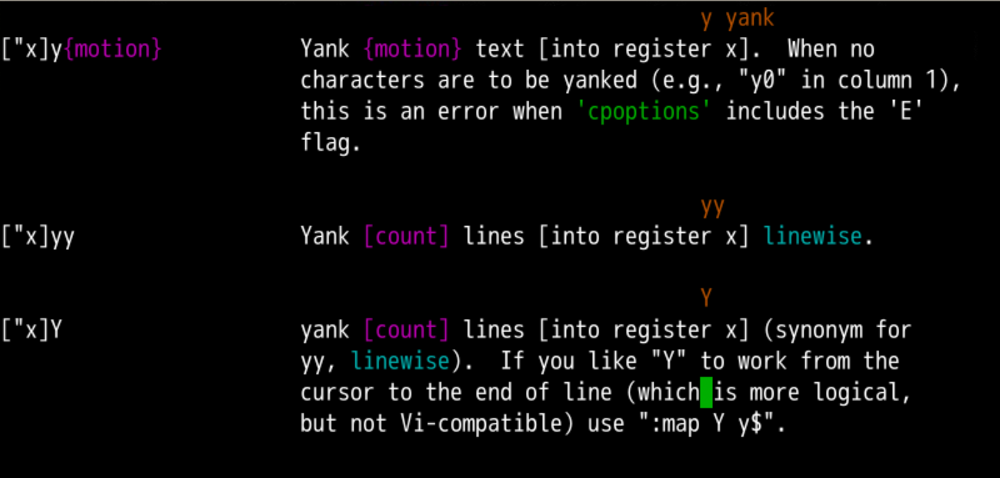
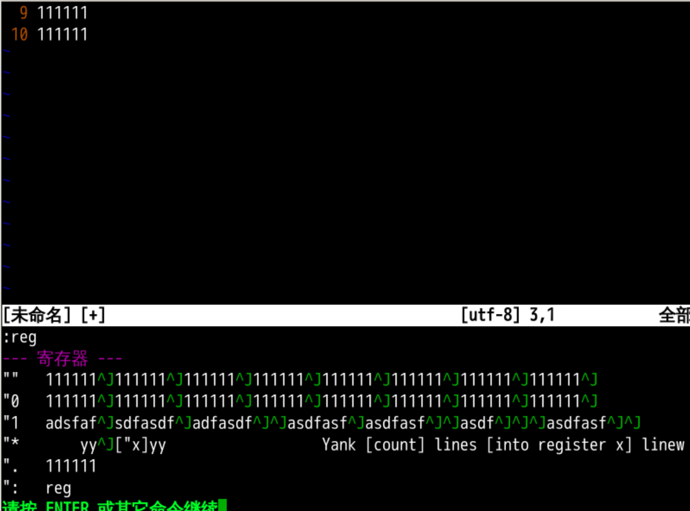

复制粘贴
回忆上节课内容🤔
- 我们上次的内容是粘贴
- 小写p意味着在光标下面或者后面粘贴
- 大写P意味着在光标上面或者前面粘贴
p的意思是放上去，就是put
- 把什么放上去呢？
- 把
reg 中 "" 的内容 放上去
- 如果
reg剪切的是一整行或者多行
- 如果
reg剪切的是不包含换行
- 有了 删除d 和 粘贴p
- 我们其实可以做剪切的操作了
- 但是如果我想要复制粘贴
- 那应该怎么办呢？🤔
关于复制
- 复制其实就在粘贴上面一点点
- 往上翻就可以找到
- 命令是y
- 对应的单词是
yank
- 什么意思呢
- "to pull, jerk," 1822, Scottish, of unknown origin. Related: Yanked; yanking. The noun is 1818 in sense of "sudden blow, cuff;" 1856 (American English) as "a sudden pull."
- 来自于苏格兰语
- 意思是猛的拉过来
- 拉到哪里？

具体操作
- 找到一行 然后进行yy操作
- 观察
:reg发现这一行已经进入了寄存器
- 找到一个合适的地方p
- 再找到一个位置P
- 加上
[count]翻倍因素
- 再观察
:reg
- 注意换行标识符为
^J

配合移动
- y之后加一个
motion
motion 那一大套还是都可以用的- 我们再来重温一遍👁
- 首行g g 、末行G 、第n行n G
- 光标运动的方式是h j k l
- 单词运动
wbe
- w 是到下一个
word的开头
- b 是到当前
word的开头
- e 是到当前
word的结尾
- 除了
word之外还有WORD
- 行头行尾
- ^ 是到本行第一个非空字符
- 0 是到本行第一个字符，不管是不是空格
- g_ 是到本行最后一个非空字符
- $ 跳到本行最后一个字符，即使他是空格
- 行内跳跃和贴靠
- 向
前跳跃是f
- 向
后跳跃是F
- 向
前贴靠是t
- 向
后贴靠是T
- 全文查找
- 文本区块
具体复制
- 比如我们可以
- 注意复制内容中有没有换行的区别
- 其实就和d到的寄存器内容是一样的
跨服务器复制粘贴
- 还有一种复制粘贴是跨服务器的复制粘贴
- 内容在本机的系统剪贴板上
- 在终端上用粘贴命令进行粘贴
- 或者在一个终端上把内容选择复制到终端所在机器的系统剪切板
- 然后再粘贴到别的机器上
- 这个时候注意两点
:set paste?
- 看看粘贴选项是什么
- 如果缩进有问题
- 那就调整一下再试
:se nonu
- 如果所需要复制的东西超过终端的容量
- 那就需要用scp命令远程拷贝
- 可以参见oeasy教您玩转linux 000222话
总结
- 我们这次的内容是复制
- d就是把东西
delete到寄存器里，就是剪切
- y就是把东西
yank到寄存器里，就是复制
yank也可以配合motion- 不管是
yank、delete都是把东西放到默认寄存器
- 到底什么是寄存器
- 有什么可玩的呢？🤔
- 下次再说 👋